The Flower War
Editorial Team
Betrayal, jealousy, and broken words are some of the topics discussed with the first former Federal President of State 89, Dark R0se, after her retirement from the state where she presided and migrated to State 90 for greater stability and protection.
Are you really as evil as everyone else says? What happened?
I’m definitely not an evil person. I’m a human. I make mistakes like everyone. But I’m not evil. When I came to 89 I came from server 30. Server 30 was run by one alliance. They took everything they wanted and burned anyone who got their way. When I became R5 the only thing I ever wanted was to have a unified server where the top alliance supported the server as a whole. I tried to always be fair to everyone regardless of how strong they were or how big their alliance is. And I do understand that did not always make everyone happy, fair is still fair. You should not have special privileges, or be treated wrong just because you don’t spend as much money as the next person.
If so, why were so many accusations made against you?
I honestly believe at this point, people are continuing to blame me because they don't want to face what they have done. While my system did not make everyone happy all the time it kept the game fair. It served the greatest good. When the attempts were made to take me down, and an essence take down the system I have built, it left the server in chaos. Those people who are responsible for the rumors and the hatefulness used to take me down now. Do not want to take responsibility for the fact that not only did their actions. Remove me. It also created chaos on the server. It's easier to blame someone else than it is to take responsibility. Kinda reminds me of what happens in American news. It's a distraction technique. If they keep you looking over here, you're not going to look at them. Let's take for example what has happened with the fishing holes. I have heard from several people, that I am being blamed for Krak taking 89 level 3. I am not in leadership in my alliance. I have no say so in what fishing holes we go after. I go where I'm told just like everyone else. I believe them blaming me so they don't have to take the responsibility and look at themselves and why we were able to take it. The server doesn't work together. They don't try to help each other. But by putting the blame on me, it distracts people from looking at the leadership of server 89. At this point, I am nothing more than scapegoat for them. A distraction technique.
What "they have done"?
When I say what they have done, I mean the whole taking me out of “power”. Or at least that’s where it started. See what I ran RLHN and the nap. It was a job for me. I logged on every day around seven. And I logged off every night around 1 AM. I would spend my entire day dealing with server issues. Talking to the other R fives. Developing plans for upcoming wars and versus events. And when I was president, I was handing out buffs. Talking to people on the server to discuss their issues and what they would like to see happen. It was Work. Unfortunately, some people saw it as power. And they wanted that power for themselves. So when I left RLHN, and was voted out of nap. No one picked up my work. The answer became let them work it out. Oh they’ll be fine. The system that kept our server united and working as one team slowly fell apart. Alliance started turning on each other. People started quitting. Everything just fell apart. This game is designed as a community strategy game. That’s why we have alliances, and states, and clusters. You have to work with your alliance, then you have to work with your state, then you have to work within your cluster. When it becomes about one person and their wants the system becomes defective. You have to play the game as a group or you are doomed to fail.
What did you do wrong? That sounds like it was all on purpose.
I think my biggest regret, and my biggest mistake was putting my trust in the wrong person. I had a person on this game that was my right hand, like my sister. I trusted her with everything. If I was having a frustrating day, I vented it to her. I ran every plan past her. I shared with her everything that was happening in other alliances. Then one day I get a message from someone else that I trust to not trust her. And I didn’t wanna believe it. And then someone else reached out to me and sent me screenshots of a private room she had created in order to turn people against me. And I still didn’t wanna believe it. Then I got a call on discord frantically telling me that it wasn’t them that this was her plan. And I still didn’t wanna believe it. It made me question everything that I had said to her and everything that she had told me. But even after all of that, I still didn’t want to let go with my friend. It wasn’t until I found out she was the one who started the vote to remove me from the nap. Even though she knew exactly why I did what I did. She had seen the screenshots that it caused me to attack that player that day. And she used that to get rid of me. She basically took everything that I told her and twisted it against me. That was when I knew it was time for me to leave this server and I reached out to Pepe to take me in. Over the next two months after that happened, I watched. I listened. And I heard all the things that she was saying about me. I watched as everyone turned against me. The same people that I had helped many times. The same people that I had listened to when they were having a bad day. The same people I had defended multiple times. All turned on me.
Who was her?
SpicyJo. And the saddest thing about it is I actually still care about her. I actually miss her sometimes. We shared many laughs and many stories about our lives and our families. And it hurts me to know end to know that for her it was just a twisted game to gain my trust. But to me, I actually considered her to be a real friend. And honestly, I know, even if you write this article, it will fall on a lot of deaf ears. Because she is really good at convincing you that she cares about you and that you are her friend.
Can you tell us more, explaining what's that, about the "private room she had created in order to turn people against me"?
There was a private room created on discord by her. The people that were invited to that room were people that had ever expressed a complaint. For example, when I versus day was only on our server. The nap would vote on the rules of that day. And of course, some people were unhappy with that vote. Like they wanted an all out battle, but the Nat had voted to only attack your opponent. So what you had an essence was a bunch of people that maybe had simple complaints that could’ve been discussed all in a room together feeding off of each other. Now much later, I did ask her about this room. She claimed it was only so people would discuss their complaints in there and not in alliance chat. The biggest issue with her explanation is, if I am not told about these issues, I can never resolve them therefore, how can the room be of any benefit to the alliance? So now we have a room of people complaining to each other and feeding off each other’s anger. And no one addressing or trying to resolve any of it.
If that room was for letting people express complaints, then how or why it's used to turn against you?
Because the room was kept a complete secret for me. As an R5, if my people have issues, I need to know so I can address them or at least explain the situation to them. When people are unhappy with something a lot of times, you can resolve it with a simple conversation. Because this room was kept a secret from me. I was never able to talk to these people. Didn’t know they had complaints. So now you got a room of say 10 people complaining about decisions that I’ve made or decisions the server has made. Now they’re all talking to each other and feeding off of each other’s anger. Which makes me the bad guy. Then Spicy Jo lead that conversation too. We should leave. And they did leave, just not all the people they thought was going to go with them went. I don’t remember the exact number, but it was about 5 to 7 people that left. The reason why only that many left was because of the screenshots I received. I didn’t have the entire conversation of what happened there, but I had enough bits and pieces to be able to address one or two of the complaints that people had without letting on that I knew about the room.
Has Jo ever disagreed with your plan, gone against you and you know or refuted something of yours?
Are you asking? Has she ever lead my decisions?
Yes
That would be a lot to go back through. I talked to her about everything. Yes there were many plans that helped me rework. She proofread all my presidential announcement. She reviewed every battle plan. She was in the nap. I would have to analyze everything that was said and done. The only thing that stands out in my mind right now, where there were some conversations in a nap where I felt uneasy about the way she was leading the conversation. But I completely trusted her. She basically handled the nap while I slept. That's how much trust I had in her.
If that's not the problem, then why did she go against you?
I have spent many a day thinking this went over to the moment that this all went left. It happened with the last flower event. The entire server., every alliance sent me flowers. It was probably one of the sweetest and most wonderful things that has happened while playing this game. It made me feel like all the work that I put into this server was actually appreciated. Unfortunately, the server did not show that love to her. Now she told me repeatedly that she didn’t care but the next thing I know she has started a competition in the alliance of who could send the most flowers. The winner of that contest would be granted the name king of roses. And of course, this is a competitive game with competitive people. A bunch of the guys jumped on it and started sending her flowers immediately. These guys spent hundreds on flowers to win that title. Hoop, knighty, and Rotor (BigD) went all out. Rotor won, and Knighty started spending like a madman to become the most powerful on the server. We all joked that he was doing it to impress her. Because everyone knew he had a big crush on her. So if I honestly had to put it on one moment, that competition would be that moment.
Knighty to Jo?
Oh yes, knighty had a huge crush on her. Everyone knew.
Jo knew too?
Of course. Me and her laughed about it many times.
Who received the most flowers?
In our alliance?
Yes
I still did. Like I said, the entire server was sending me flowers. That memory will always be in my mind. I spent hours sending thank youse to everyone who sent me a flower. Even if it was just one.
So the private room on discord was created because Jo didn't win?
Honestly, this is only my speculation. Because I found out about it after the event. It may have always been her plan to take over. Or it may have been that event that sparked the jealousy.
If the hatred started within the alliance, how did it spread throughout the state?
Because she left the alliance. Her first attempt to tear apart the alliance did not work. When she left only a few followed. And one of those came back to me. She became R5 Inx, then she became an R4 in BROO, then she became R5 of WSS. Notice all of those alliances fell apart.
You say that she left the alliance because she didn't win the flower event and started spreading lies about you?
No, no no. I think the flower event created a jealousy. From what I was told by others, her goal was to be in control of the strongest alliance and the server. And technically, she basically accomplished that. And what did she do with it? She ran the NAP, even when she was just an R four in WSS. And here is my point. It is under her leadership that the server fell. But you never hear about that. All you hear about is how it’s my fault when I have no say on the server, thanks to her vote to keep me out. Now let me throw in a disclaimer because I know this is gonna come up. As I said before I talk to her about everything and I vented to her. So have I talked shit about other R5s, or R4s. Yes I have. Because sometimes you just gotta get your frustrations out. And I have definitely said some, not so nice things about people, but it was said out of frustration and it was said in a place where I thought it was confidential.
Who went with her to other alliances, which alliance was it and what happened?
The first alliance they went to was INX, then BROO, then WSS. Hoop, Nic, Al Capone, fckr, and one or two more.
After she left RLHN (now NWE), what happened to the alliance that she had left? At that moment, you were still being R5?
Yes, I was still R5 of RLHN. We brought in new players and I promoted some people to R four to take their place.
Now let's talk about the moment where you started burning "the whole server". Can you explain with details?
First of all, it was not the whole server. Adame was a guy in my alliance who wanted to be an R4. He was very helpful and I was definitely considering making him one. Unfortunately, there were a lot of rumors around him that he had done stuff and said stuff. And honestly, I didn’t know if it was true or not so I was basically watching him to see if he could be trusted. So why all this is going on I find out that he’s created a room in the game and invited everyone that is level 30 except for myself and the other 30s in my alliance that are loyal to me to this room. I literally woke up too five different people sending me screenshots of this room that he had created. Where he is discussing with these 30s that he wants to create a super alliance that can compete with RLHN. So I immediately went to him. And of course he immediately goes to the room and start saying she knows she knows. Little did he know they were sending me screenshots of every word said in that room. So I let him know that all these people that he’s trying to get to create this super alliance are my friends and they’re telling me of everything he saying. Of course he then gives me a story that he was only trying to bring all the 30s together first and then he was going to bring me in later and have me lead the alliance. He had no idea that I had already seen that he was talking to TQL about using their alliance as the new super alliance. When I showed him the screenshots of everything I had, he came clean he apologized and he begged me for my forgiveness. At this point, I’m like no he will never be an R4. But I’ll give him a second chance. He accepted this or at least I thought he accepted this. On the day we did capital. I found out he had been messaging R5s, telling them that if they make him an R4, he will bring all the strong players from RLHN with him. NSTR accepted his offer, and Aeyd went with him. I immediately went to nap, and I let them know that this guy had betrayed my alliance not once, but now twice, and that I was going to burn him. Georgie told me that he was her member now and that she would defend him. So he got burned, Georgie got burned, and anyone else that got involved got burned. Creed was a side swipe, because the disrespectful way he had been speaking to me a nap. Kyoubou burned them. After I burned Adame, I said I quit, and he took my phone and burned the rest of them. So basically four or five people got burned that day. This is when Joe jumped into action and had me banned from the nap. I basically gave her everything she wanted. And what did she do with it? Well, we all see the state of 89 now.
Briefly, who's Georgie and what she told you?
Georgie was the leader of NSTR, she later changed her name to King Princess. And if you still don’t know who she is, she was that girl that was always in world chat, saying inappropriate stuff to any man who would listen. I ain’t never seen one woman flirt so much in my damn life. And I swear I think I’ve seen more of her boobs that I have on my own. The Major, betrayal with her is, I always protected that alliance. That was the deal that I made with Aeyd. He no longer wanted to be leader, but he wanted to make sure that alliance was always protected. So I did everything I could to protect them. I even sent them members to help them take cities when they couldn’t take them themselves. I made deals with other alliances to give them cities. So it was like a double stab in the back. So yeah, I snapped. I felt like Julius Caesar getting stabbed by my own friends
Can you explain "he took my phone and burned the rest of them"?
I only burned the person. I said I was going to burn Adame. Then I said I quit. Kyoubou and I are real life friends and he was at my place that day for capital. So he was literally there looking me in my face seeing the pain and hurt that I was feeling from the betrayal and when I put my phone down and said I quit, he picked it up and said are you sure you quit and I said yeah fuck them. And he proceeded to burn the other four people. He zeroed King Princess, he hit hoop, one time for interfering, he zeroed Adame again, then he went and hit Creed. He hit creed because he was the admin of the nap discord. So he had seen every conversation and every disrespectful remark creed had made to every woman in there. He didn’t like him very much. Also, I would like to address the fact that people have said that I made racist comments toward Aeyd. When I called him a fake Muslim. First, I have very close friends that are Muslims. I actually know a good bit about the religion. And I do know what the principles are. Me calling him a fake Muslim was me saying that he is not being true to the religion that he likes to throw around that he is be so proud to be a member of. When all of this happened with him, I was fasting with him as part of Ramadan. Because I support my members. For him to then turn around and stab me in my back was just too much. I never meant any disrespect to any Muslims. I respect all religions. Everybody was persecuting me for that, but isn’t it kind of ironic that the Indonesians followed me to my new alliance? They are all Muslims and they know the respect that I showed them and their religious beliefs.
After that event, what happened to you and everyone involved?
So after all of that happened and I calm down, I decided I was not going to let these people run me off. Rotor decided he was going to keep R5. Sassy was on a tirade because I didn’t make her R5. And the only reason why I didn’t was because she wasn’t online and she has a temper. I felt in that moment the alliance needed someone calm to lead them until I resumed leadership. Well that never happened. Kyoubou form a small alliance, and we all joined that. Then I remembered that Joe had destroyed BROO but the alliance was still sitting there as a farm alliance. So I messaged Lenny and I asked her if we could join. She said yes, and then she informed me of how badly they were being treated in TQL and wanted to know if I would be interested in rebuilding the alliance. I told her yes. Now why all this is going on rogue is begging the nap to let me join them. Of course Joe said no. Rogue intern said they would take me in even without the naps approval. I declined their offer because honestly, I love rogue and I love their members and I didn’t want to put them in danger. They had worked so hard to get into the nap on their own and I would not take that from them. So we stood BROO back up. Brought a lot of old members back to the alliance. And the Indonesian from RLHN and from other alliances came there too. That put us back into the top 10. The nap refused to let us back in, even though we had earned our position. They informed Lenny that she would have to get rid of me. She refused because I had helped her rebuild. The alliance was targeted every day. We continuously got hit, but we continuously grew. I guess once they got tired of hitting us and they realize we weren’t going anywhere we were allowed back into the nap. With the caveat that I was not allowed to speak in nap chat. Now true to what Maxi says, he did try to get me back into the nap. The problem was his girlfriend didn’t want me there. Whenever I asked her about it, she would say let me check on it. I guess she didn’t realize everything that was being said in nap chat was being told to me. So yes, the alliance was allowed in, but I was still banned from the chat. I can only assume that she was afraid that if I came back in there, I might take back over.
What is your current relationship with SpicyJo? How would you define it?
I have no relationship with her, she is blocked on discord and in the game. But she did take time to send a threat to me through Kyoubou.
Is there a possibility that both of you could reconcile?
No, once someone has cut you this deep there’s no going back. I can be civil, but I could never be her friend again.
Do you want to send her a message through Luxury Time?
Nope. But thanks for the offer.
Any messages for people that don't know your history and those who know it partially?
My message for 89 would be to move on from the past and try to work together. The only way they can succeed is if they can leave it all behind and start new. Be the one server one team that I know they can be. And to know that I have nothing against 89. I have never blamed the server for the actions of a few people. I still believe in them all, even if they didn’t believe in me.
And for those who were part of that history who are still in State #89?
I would say, learn from your mistakes and do better for the server sake. Our past is just that the past. I have moved on and you should do the same.
How were those last two weeks of your stay in State 89 before migrating to State 90?
It was definitely a mix bag for me. I was excited to finally be getting out of the chaos and drama. But I was also sad because I’d be leaving many of my friends behind. And honestly up into the moment I migrated I just kept hoping the server would turn around. Just hoping the petty fighting will stop. That people would actually start to put the server first. But when I saw people were being attacked for leaving, I knew it would never change.
What alliance were you in and what was it like there?
I’m in KRAK. It’s nice here. Much less drama on the server as a whole and in the alliance. Pepe gives clear instructions on what we are doing and what is expected of us. The atmosphere is friendly, and people are always willing to help each other. The server as a whole works together. It’s great.
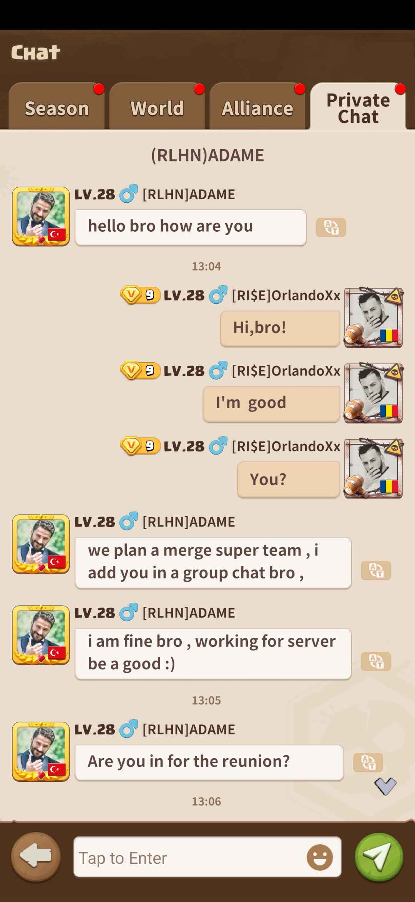
Image provided by Dark R0se.
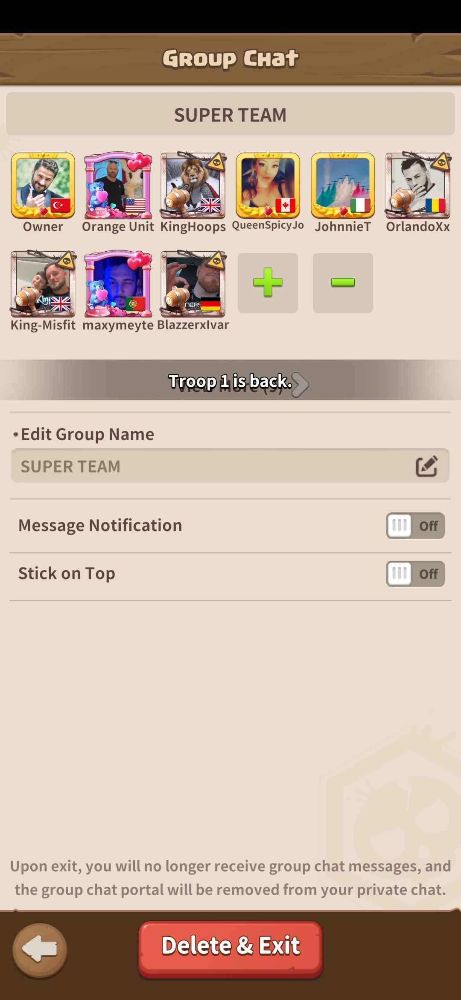
Image provided by Dark R0se.
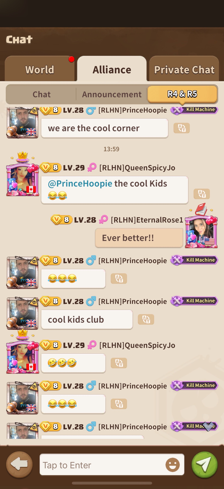
Image provided by Dark R0se. ¨This is them laughing in my face because they didn’t know that I knew about their secret chat room that they called the cool kids club¨, said Dark R0se.
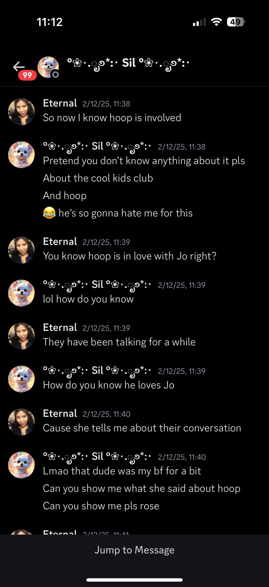
Image provided by Dark R0se.
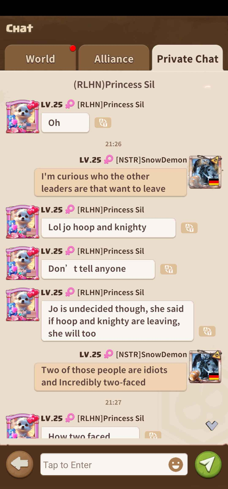
Image provided by Dark R0se.
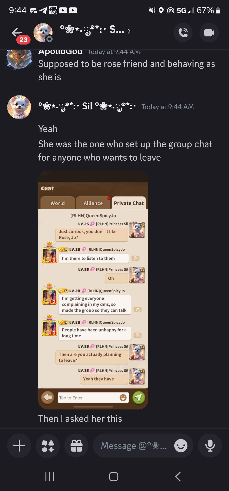
Image provided by Dark R0se.
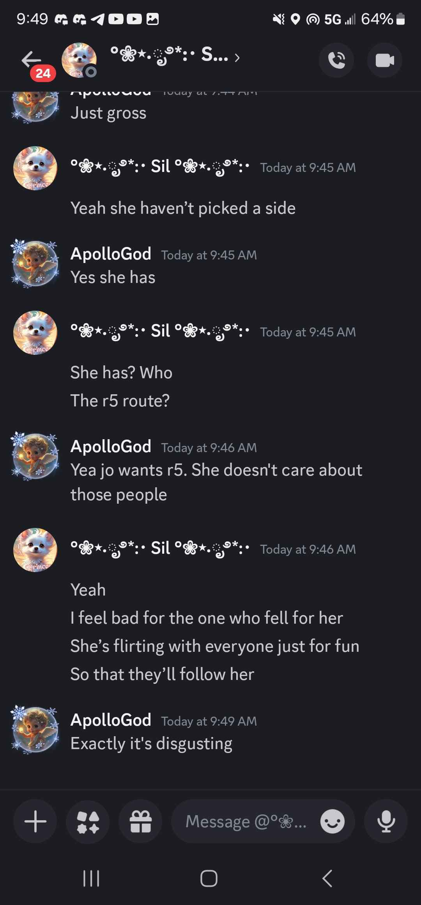
Image provided by Dark R0se.
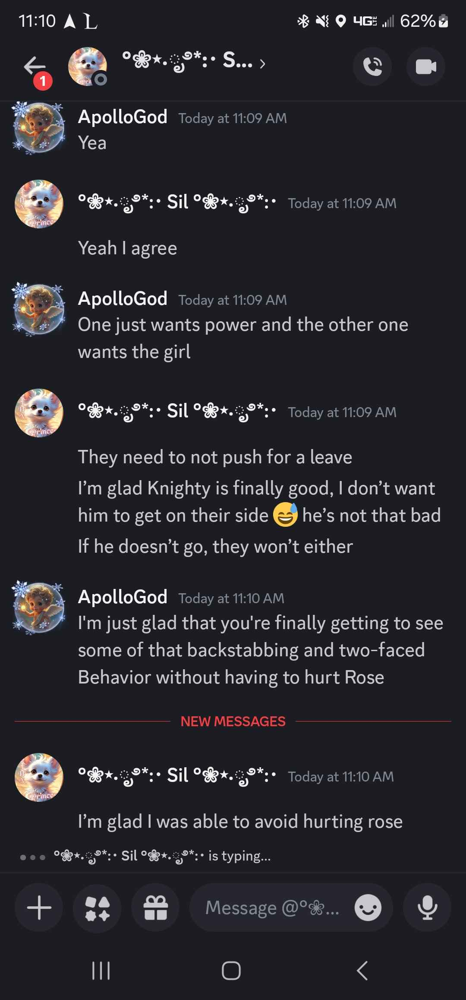
Image provided by Dark R0se.
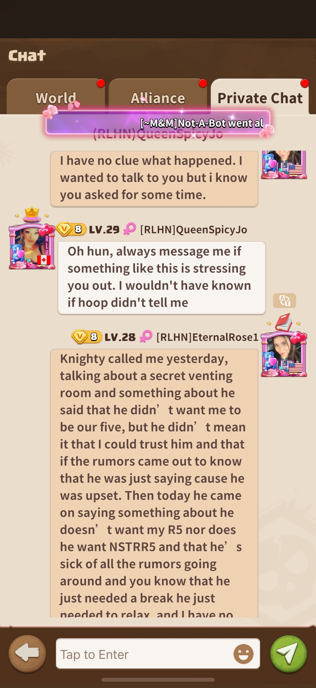
Image provided by Dark R0se.
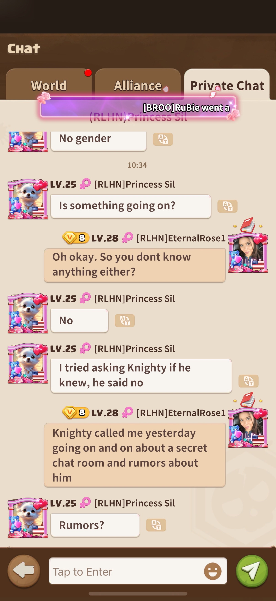
Image provided by Dark R0se.
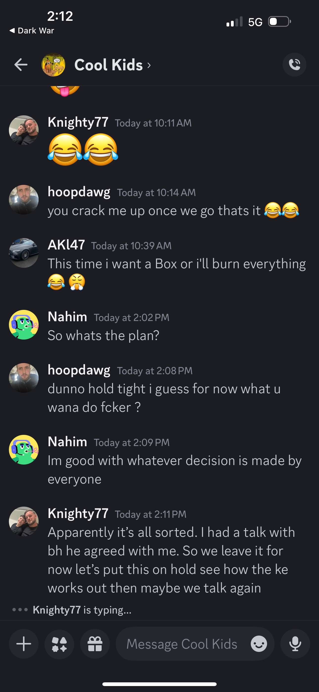
Image provided by Dark R0se.
Image provided by Dark R0se.